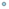

<!doctype html>
<html lang="en">
    <head>
        <meta charset="utf-8">
        <meta http-equiv="X-UA-Compatible" content="IE=edge">
        <meta name="viewport" content="initial-scale=1,user-scalable=no,maximum-scale=1,width=device-width">
        <meta name="mobile-web-app-capable" content="yes">
        <meta name="apple-mobile-web-app-capable" content="yes">
        <link rel="stylesheet" href="css/leaflet.css"><link rel="stylesheet" href="css/L.Control.Locate.min.css">
        <link rel="stylesheet" href="css/qgis2web.css"><link rel="stylesheet" href="css/fontawesome-all.min.css">
        <link rel="stylesheet" href="css/leaflet-search.css">
        <link rel="stylesheet" href="css/leaflet-measure.css">
        <style>
        #map {
            width: 1120px;
            height: 813px;
        }
        </style>
        <title></title>
    </head>
    <body>
        <div id="map">
        </div>
        <script src="js/qgis2web_expressions.js"></script>
        <script src="js/leaflet.js"></script><script src="js/L.Control.Locate.min.js"></script>
        <script src="js/leaflet.rotatedMarker.js"></script>
        <script src="js/leaflet.pattern.js"></script>
        <script src="js/leaflet-hash.js"></script>
        <script src="js/Autolinker.min.js"></script>
        <script src="js/rbush.min.js"></script>
        <script src="js/labelgun.min.js"></script>
        <script src="js/labels.js"></script>
        <script src="js/leaflet-measure.js"></script>
        <script src="js/leaflet-search.js"></script>
        <script src="data/ne_10m_airports_1.js"></script>
        <script>
        var map = L.map('map', {
            zoomControl:true, maxZoom:28, minZoom:1
        }).fitBounds([[-51.56642521090935,-49.7026883749085],[83.3757163986401,136.32112706217694]]);
        var hash = new L.Hash(map);
        map.attributionControl.setPrefix('<a href="https://github.com/tomchadwin/qgis2web" target="_blank">qgis2web</a> &middot; <a href="https://leafletjs.com" title="A JS library for interactive maps">Leaflet</a> &middot; <a href="https://qgis.org">QGIS</a>');
        var autolinker = new Autolinker({truncate: {length: 30, location: 'smart'}});
        L.control.locate({locateOptions: {maxZoom: 19}}).addTo(map);
        var measureControl = new L.Control.Measure({
            position: 'topleft',
            primaryLengthUnit: 'meters',
            secondaryLengthUnit: 'kilometers',
            primaryAreaUnit: 'sqmeters',
            secondaryAreaUnit: 'hectares'
        });
        measureControl.addTo(map);
        document.getElementsByClassName('leaflet-control-measure-toggle')[0]
        .innerHTML = '';
        document.getElementsByClassName('leaflet-control-measure-toggle')[0]
        .className += ' fas fa-ruler';
        var bounds_group = new L.featureGroup([]);
        function setBounds() {
        }
        map.createPane('pane_ESRIGraylight_0');
        map.getPane('pane_ESRIGraylight_0').style.zIndex = 400;
        var layer_ESRIGraylight_0 = L.tileLayer('http://services.arcgisonline.com/ArcGIS/rest/services/Canvas/World_Light_Gray_Base/MapServer/tile/{z}/{y}/{x}', {
            pane: 'pane_ESRIGraylight_0',
            opacity: 1.0,
            attribution: '',
            minZoom: 1,
            maxZoom: 28,
            minNativeZoom: 0,
            maxNativeZoom: 20
        });
        layer_ESRIGraylight_0;
        map.addLayer(layer_ESRIGraylight_0);
        function pop_ne_10m_airports_1(feature, layer) {
            var popupContent = '<table>\
                    <tr>\
                        <td colspan="2"><strong>type</strong><br />' + (feature.properties['type'] !== null ? autolinker.link(feature.properties['type'].toLocaleString()) : '') + '</td>\
                    </tr>\
                    <tr>\
                        <td colspan="2"><strong>name</strong><br />' + (feature.properties['name'] !== null ? autolinker.link(feature.properties['name'].toLocaleString()) : '') + '</td>\
                    </tr>\
                    <tr>\
                        <td colspan="2"><strong>iata_code</strong><br />' + (feature.properties['iata_code'] !== null ? autolinker.link(feature.properties['iata_code'].toLocaleString()) : '') + '</td>\
                    </tr>\
                    <tr>\
                        <td colspan="2"><strong>wikipedia</strong><br />' + (feature.properties['wikipedia'] !== null ? autolinker.link(feature.properties['wikipedia'].toLocaleString()) : '') + '</td>\
                    </tr>\
                    <tr>\
                        <td colspan="2"><strong>Clase</strong><br />' + (feature.properties['Clase'] !== null ? autolinker.link(feature.properties['Clase'].toLocaleString()) : '') + '</td>\
                    </tr>\
                </table>';
            layer.bindPopup(popupContent, {maxHeight: 400});
        }

        function style_ne_10m_airports_1_0(feature) {
            switch(String(feature.properties['Clase'])) {
                case 'Major Airoport':
                    return {
                pane: 'pane_ne_10m_airports_1',
                radius: 6.0,
                opacity: 1,
                color: 'rgba(35,35,35,0.3803921568627451)',
                dashArray: '',
                lineCap: 'butt',
                lineJoin: 'miter',
                weight: 1,
                fill: true,
                fillOpacity: 1,
                fillColor: 'rgba(152,92,180,1.0)',
                interactive: true,
            }
                    break;
                case 'Mid Airoport':
                    return {
                pane: 'pane_ne_10m_airports_1',
                radius: 4.0,
                opacity: 1,
                color: 'rgba(35,35,35,0.403921568627451)',
                dashArray: '',
                lineCap: 'butt',
                lineJoin: 'miter',
                weight: 1,
                fill: true,
                fillOpacity: 1,
                fillColor: 'rgba(242,121,208,1.0)',
                interactive: true,
            }
                    break;
                case 'Small Airoport':
                    return {
                pane: 'pane_ne_10m_airports_1',
                radius: 2.0,
                opacity: 1,
                color: 'rgba(35,35,35,0.3803921568627451)',
                dashArray: '',
                lineCap: 'butt',
                lineJoin: 'miter',
                weight: 1,
                fill: true,
                fillOpacity: 1,
                fillColor: 'rgba(157,209,226,1.0)',
                interactive: true,
            }
                    break;
            }
        }
        map.createPane('pane_ne_10m_airports_1');
        map.getPane('pane_ne_10m_airports_1').style.zIndex = 401;
        map.getPane('pane_ne_10m_airports_1').style['mix-blend-mode'] = 'normal';
        var layer_ne_10m_airports_1 = new L.geoJson(json_ne_10m_airports_1, {
            attribution: '',
            interactive: true,
            dataVar: 'json_ne_10m_airports_1',
            layerName: 'layer_ne_10m_airports_1',
            pane: 'pane_ne_10m_airports_1',
            onEachFeature: pop_ne_10m_airports_1,
            pointToLayer: function (feature, latlng) {
                var context = {
                    feature: feature,
                    variables: {}
                };
                return L.circleMarker(latlng, style_ne_10m_airports_1_0(feature));
            },
        });
        bounds_group.addLayer(layer_ne_10m_airports_1);
        map.addLayer(layer_ne_10m_airports_1);
        var baseMaps = {};
        L.control.layers(baseMaps,{'ne_10m_airports<br /><table><tr><td style="text-align: center;"></td><td>Major Airoport</td></tr><tr><td style="text-align: center;"></td><td>Mid Airoport</td></tr><tr><td style="text-align: center;"></td><td>Small Airoport</td></tr></table>': layer_ne_10m_airports_1,"ESRI Gray (light)": layer_ESRIGraylight_0,}).addTo(map);
        setBounds();
        map.addControl(new L.Control.Search({
            layer: layer_ne_10m_airports_1,
            initial: false,
            hideMarkerOnCollapse: true,
            propertyName: 'iata_code'}));
        document.getElementsByClassName('search-button')[0].className +=
         ' fa fa-binoculars';
        </script>
    </body>
</html>
